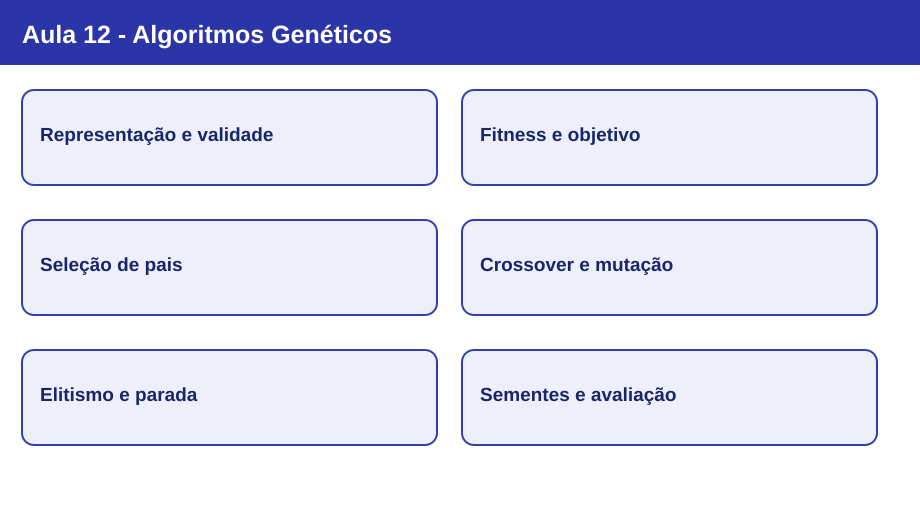

Nota visual 12 - Algoritmos Genéticos

Mapa conceitual
flowchart LR
A["Problema e restrições"] --> B["Representação dos indivíduos"]
B --> C["População inicial"]
C --> D["Avaliação por fitness"]
D --> E["Seleção de pais"]
E --> F["Crossover e mutação"]
F --> G["Nova geração e elitismo"]
G --> D
D --> H{"Critério de parada?"}
H -->|sim| I["Melhor solução conhecida"]
H -->|não| E
classDef base fill:#e9eafb,stroke:#2435a0,color:#17215e;
classDef action fill:#e1f2f0,stroke:#20766c,color:#12463f;
classDef end fill:#e8f5e9,stroke:#2c7a40,color:#154923;
class A,B,C,D,H base;
class E,F,G action;
class I end;
Conceitos em sequência
- Da busca local à busca populacional: em vez de modificar somente uma solução corrente, o AG mantém uma população de candidatos. Isso amplia as possibilidades de exploração, mas não elimina a convergência prematura.
- Representação e validade: um cromossomo codifica uma solução; genes representam componentes. Codificações binárias, reais e por permutação exigem operadores compatíveis com suas restrições.
- Função objetivo e fitness: a função objetivo expressa o problema; a aptidão estabelece como comparar candidatos no mecanismo de seleção. Em minimização, não se deve tratar automaticamente um custo maior como uma aptidão melhor.
- Seleção: roleta amostra pais conforme aptidões não negativas normalizadas; torneio escolhe o melhor entre participantes sorteados. Selecionar não é garantir o melhor indivíduo global.
- Crossover e mutação: recombinação de um ou mais pontos e mutação por gene introduzem variações. Um descendente pode melhorar, piorar ou manter a aptidão; a codificação determina o operador apropriado.
- Elitismo, parada e experimentação: preservar a elite evita perder o melhor candidato conhecido. Sementes, parâmetros, tamanho da população e orçamento de avaliações influenciam os resultados; uma execução não demonstra superioridade.
Mapa de decisões: representação e operadores
| Representação | Exemplo de candidato | Atenção ao operador |
|---|---|---|
| Binária | 0110 1001 1001 0110 |
Crossover de um ponto e inversão de bits mantêm a codificação binária. |
| Real | [0.2, -1.7, 3.0] |
Respeitar limites e significado das variáveis. |
| Permutação | [A, C, B, D] |
Crossover binário direto pode repetir cidades e omitir outras; exigir operador específico ou reparação. |
O ciclo de AG na prática: imagem 4 × 4
O alvo da prática é 0110 / 1001 / 1001 / 0110, com 16 genes binários. Cada bit vale 0 (branco) ou 1 (preto), e o fitness conta coincidências com o alvo:
Alvo Candidato
0110 0110
1001 1010
1001 1001
0110 0110
Esse candidato difere em duas posições e obtém fitness 14/16. A seleção por torneio, o crossover de um ponto, a mutação por bit e o elitismo atuam sobre esse mesmo objetivo didático. Não se trata de um problema que necessite de AG para obter solução exata: o interesse é observar seus mecanismos.
Da imagem ao TSP
No TSP, um cromossomo codifica uma permutação de cidades e a função objetivo minimiza o custo do circuito. A estrutura do problema muda, portanto os operadores usados na imagem binária não devem ser transferidos sem adaptação. A etapa fundamental continua sendo escolher representação, função objetivo, restrições e operadores coerentes.
Revisão de 30 segundos
AG evolui uma população de soluções candidatas. A avaliação atribui qualidade; a seleção favorece pais; crossover e mutação criam descendentes; elitismo preserva bons candidatos. A representação e as restrições condicionam todos esses mecanismos.
Erros conceituais frequentes
- Afirmar que populações garantem o ótimo global ou eliminam estagnação.
- Confundir maximização de fitness com minimização do custo original sem transformação apropriada.
- Tratar crossover e mutação como operadores que necessariamente melhoram a solução.
- Usar crossover de bits em permutações do TSP sem garantir visitas válidas.
- Concluir que um parâmetro é melhor a partir de uma única execução.
Revisão de 1 minuto
Explique por que a escolha do cromossomo precede a escolha do crossover. Depois descreva uma geração completa e justifique por que, na imagem 4 × 4, o melhor fitness deve ser avaliado com o mesmo alvo e múltiplas sementes ao comparar configurações.
Checklist
- [ ] Distingo solução, cromossomo, gene, população e geração.
- [ ] Sei relacionar objetivo, custo e fitness.
- [ ] Consigo executar seleção por torneio e interpretar seleção por roleta.
- [ ] Sei mostrar crossover, mutação por bit e elitismo em um exemplo binário.
- [ ] Identifico quando uma representação exige operadores específicos.
- [ ] Reconheço os limites de conclusões baseadas em uma única execução.
- [ ] Consigo explicar como a Aula 13 compartilha informação sem crossover.
Estudo guiado · Slides da Aula 12 · Exemplo Python pós-aula
Próxima conexão: ACO e PSO também utilizam múltiplos candidatos, mas orientam a busca por feromônios ou memórias individuais e coletivas, não pela mesma sequência de operadores genéticos.